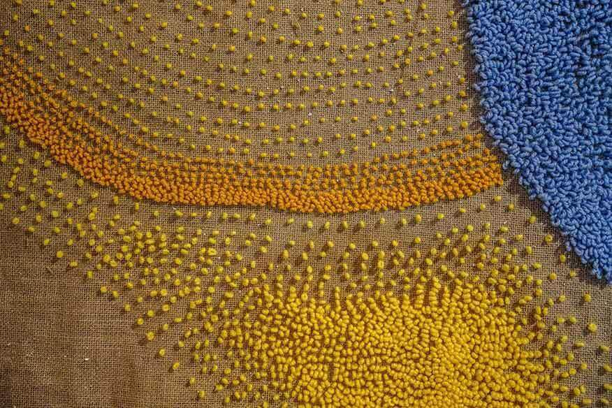
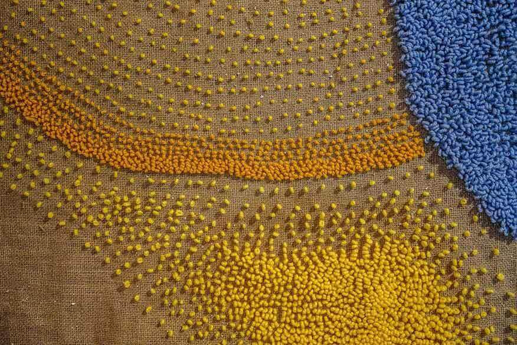

Pravica do Sonca
Avtorica: Teja Šter / Mentorice: prof. Marija Jenko, izr. prof. mag. Katja Burger Kovič, asist. mag. Arijana Gadžijev / Foto: Jaka Ceglar / 2023
The Right to the Sunlight / Author: Teja Šter / Mentors: Prof. Marija Jenko, Assoc. Prof. Katja Burger Kovič, Tch. Asst. Arijana Gadžijev / Foto: Jaka Ceglar / 2023
The Right to the Sunlight / Author: Teja Šter / Mentors: Prof. Marija Jenko, Assoc. Prof. Katja Burger Kovič, Tch. Asst. Arijana Gadžijev / Foto: Jaka Ceglar / 2023

 

Avtorica je skozi proces ustvarjanja dela raziskovala svoje občutke ob pomanjkanju sončne svetlobe v svojem dnevno-delovnem prostoru v zimskem času. Stanovanje v tem letnem času zaradi arhitekture ne prejema direktne sončne svetlobe, ob določenih urah pa se pojavi odblesk od sosednjega okna.
While creating the artwork, the author explored her feelings of light deprivation in her workspace during winter. Due to its architecture, the apartment does not receive direct sunlight at this time of the year, and at certain times, there is a reflection from the neighbouring window.

To jo je vodilo v nadaljnjo raziskavo odbleskov, ki se pojavljajo v ozkih ulicah starega mestnega jedra v Kranju in ki se kažejo v direktni zrcaljeni obliki oken ter v popačenih večplastnih združenih oblikah, skupaj pa ustvarjajo zanimive vzorce na fasadah. Vzporednice za nadaljnje delo je našla v različnih vejah umetnosti. Navdušil jo je podatek, da so že v Justinijanovem zakoniku uzakonili pravico do Sonca, kar pomeni, da mora imeti vsak prebivalec tudi v notranjih prostorih dovolj naravne svetlobe čez celo leto.
This led her to further investigate reflections that occur in the narrow streets of the old town centre in Kranj. They manifest in direct reflected forms of windows and distorted layered composite shapes, together creating intriguing patterns on the facades. She found parallels for further work in various branches of art. She was fascinated by the Code of Justinian initiating sun rights, meaning that every individual must have enough natural light throughout the year, also indoors

Pogled v delček neba, omejen z zidom in hišami, jo je asociiral na delo Jamesa Turrella in njegovo Skyspace instalacijo, ki ustvarja poseben prostor znotraj arhitekture, katerega glavna značilnost je odprtina na stropu, skozi katero lahko gledalci opazujejo nebo.
The view of a fragment of the sky, confined by walls and houses, reminded her of the work of James Turrell and his Skyspace installations, enclosed spaces that frame the sky.

Proces ustvarjanja se je začel s poenostavljenimi ilustracijami notranjega dvorišča in iskanjem mehkih oblik, ki so se nato pretvorile v tekstilne poskuse. Z izbrano tehniko vezenja z votlo iglo, kjer se na licni strani ustvarjajo zanke, je eksperimentirala v različnih gostotah ter višinah zank v krožnih in elipsastih oblikah. Poleg poskusov na kvadratnih kosih jute je povezla tudi ogledala, s katerimi je ob prisotnosti vira svetlobe (svetilke) dosegla učinek odbleskov oken, ki jih je opazovala v ulicah. Hkrati je med ustvarjanjem poskusov razmišljala o postavitvi tekstilne instalacije, za mesto katere si je izbrala klet Mestne hiše v Kranju.
he creative process began with simplified illustrations of the inner courtyard and the exploration of soft shapes, which were then transformed into textile experiments. Using the technique of punch needle embroidery, where loops are created on the front side, she experimented with different densities and heights of loops in circular and elliptical shapes. In addition to experiments on square pieces of jute, she also incorporated mirrors, with which, in the presence of a light source (a lamp), she achieved the effect of reflections of the windows she observed in the streets. At the same time, while experimenting, she was thinking about setting up a textile installation, and as a location, she chose the basement of the Town Hall in Kranj.

Temačna klet z malo naravne svetlobe je še dodatno poudarila lastne občutke in doživljanje ob pomanjkanju svetlobe, zato je razmišljala o postavitvi luči, katere glavni namen ni bil osvetljevanje instalacije, pač pa lovljenje odbleskov ogledal, ki so posredno osvetlili gosto povezene dele instalacije.
The dark basement with little natural light further emphasised her feelings and experiences regarding the lack of light. Therefore, the primary purpose of the placement of the lights was not to illuminate the installation but to capture reflections of the mirrors, which indirectly illuminated densely embroidered parts of the installation.
Končno instalacijo sestavljajo velika, ročno povezena tapiserija, šest različno velikih preprog, ustvarjenih s tehniko tafting, ter štiri ogledala, oblečena v mehko teksturo zank, z različnimi odprtinami. Vzorci so bili ustvarjeni po podobah popačenih odbleskov, ki se pokažejo izrazito ali pa čisto nežno. Gledalci so bili povabljeni, da se z ogledalci poigrajo, najdejo odblesk in z njim osvetlijo želen del instalacije.
The final installation consists of a large, handwoven tapestry, six differently sized rugs created using the tufting technique, and four mirrors clad in a soft texture of loops with various openings. Patterns were created based on images of distorted reflections, which manifest distinctly or very subtly. Viewers were invited to play with the mirrors, find the reflection and use it to illuminate a part of the installation.